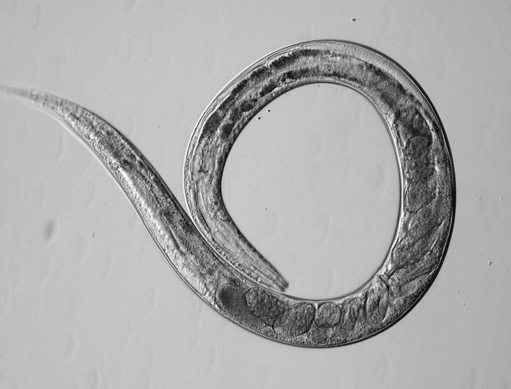
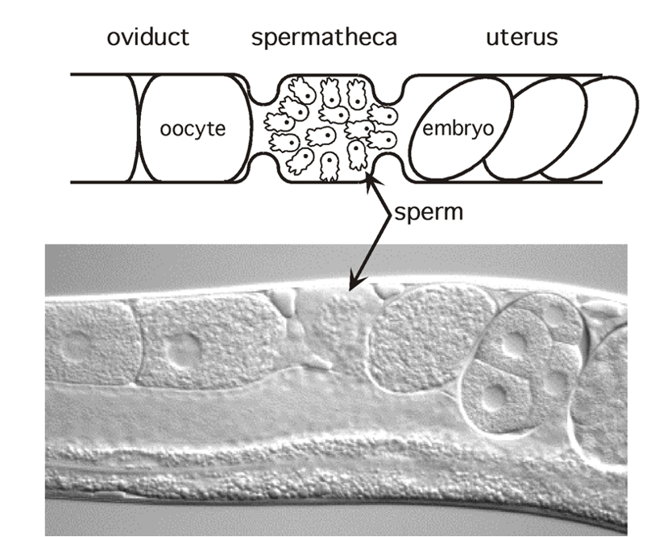
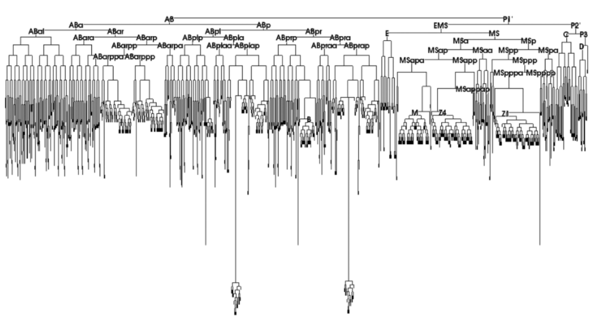
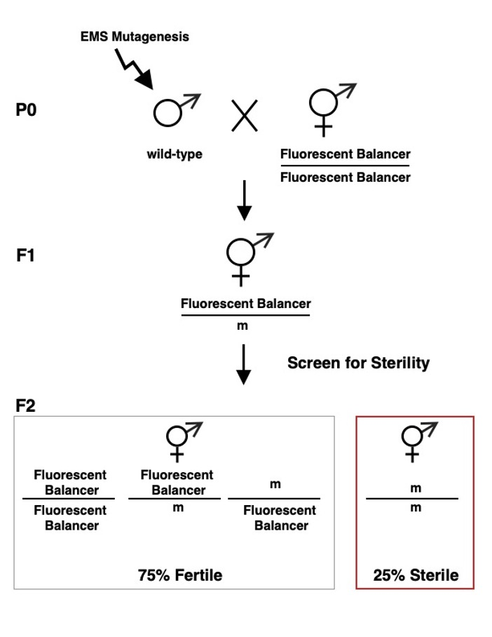
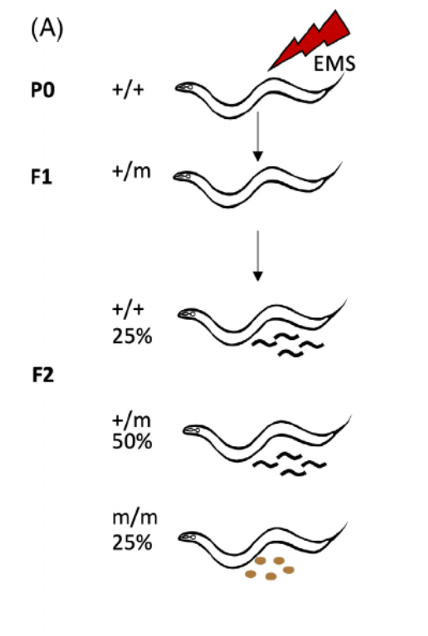

C. elegans— A Model Organism to Study Fertilization and Reproduction
An introduction to Caenorhabditis elegans utility in developmental reproduction and structural fertility mechanics.
Why Study the Worm?
First introduced to molecular neurology and developmental biology arrays by Dr. Sydney Brenner in 1974, the small soil-dwelling nematode Caenorhabditis elegans has emerged as one of the premier biological model organisms. Its simple anatomy, genetic tractability, and highly predictable cellular lineages provide an unparalleled template for unlocking the foundational rules governing eukaryotic fertility, tissue differentiation, and sexual dimorphism.
Notable Experimental Attributes for Reproductive Research
The entire body wall is completely transparent across all lifecycle stages. Because they are transparent, we can observe fertilization without dissection. Researchers can clearly observe organogenesis, structural cell layouts, track individual egg or sperm transitions, and verify internal fertilizations live in vivo using differential interference contrast (DIC) microscopy. The way that fertilization works in the hermaphrodite is that the mature sperm are found in this structure called the spermatheca, and as the oocytes are ovulated and mature they are pushed into the spermatheca where they interact with the sperm and become fertilized.

Non-Invasive Profiling: Non-invasive DIC profile revealing internal developmental features without dissection.

In Vivo Ovulation Detail: Live view tracking sequential oocyte entry into the self-sperm chamber.
Every single adult hermaphrodite possesses exactly 959 somatic cell nuclei. The invariant line-of-descent fate of every single cell has been completely cataloged from zygote to adult, making it easy to identify individual cellular defects or variations caused by developmental disruptions or targeted fertility anomalies.

Lineage Tracking Map: Structural overview of the invariant, mapped somatic cell lineages from embryogenesis to maturity.
Populations exist as self-fertilizing XX hermaphrodites (producing both eggs and self-sperm) alongside rare XO males. This unique mating architecture allows dangerous or fully sterilizing fertility mutations to be safely propagated and analyzed across multiple generations via male cross-breeding systems.

Mating Cross Systems: Cross-breeding architecture showing genetic propagation of sterile mutant lines using heterozygous balancers.
Extremely responsive to genetic manipulation through high-throughput forward genetic screening or targeted reverse genetic editing techniques (such as systemic microinjected CRISPR cassettes or simple, cost-efficient feeding-based RNA interference protocols).

Functional Genomics: Visualization tracking germline responses to targeted microinjection or selective gene-silencing arrays.
Included Academic References:
- DIC Imaging Reference: PMC12999071 — Fig 8 activation
- Fertilization Insights: Fertilization insights reference
- Classic Manuals: NCBI Bookshelf — C. elegans II Database